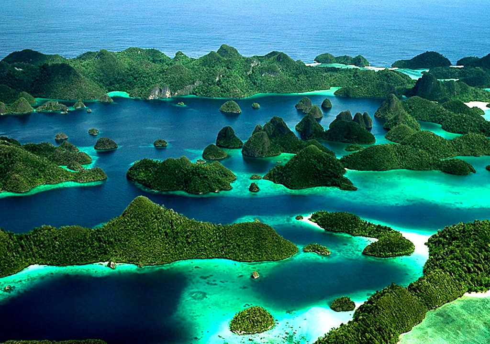

Kepulauan Raja Ampat
pikiran menerawang dan sebuah lukisan elok pun muncul terbayang. Lautan lepas dengan pulau-pulau karang yang tersusun rapih menyambut beberapa ekor lumba-lumba yang berloncatan ceria. Langit yang biru berpadu dengan indahnya riak ombak menyisir setiap pasir putih di tepian pantai. Udara segar bertiup riuh rendah menjamin kesejukan alami khas hutan-hutan tropis yang hijau. Suara burung-burung camar pun menyeruak indah seakan bernyanyi dan mensyukuri pemandangan menakjubkan ini. Dari dalam air pun berkeriapan berbagai ikan berwarna cantik menghiasi karang-karang hidup yang menari gemulai. Ini adalah sebuah surga kehidupan nyata di bumi.
Raja Ampat adalah sebuah kabupaten dan merupakan bagian dari Propinsi Papua Barat. Untuk mencapai Kepulauan ini, kita harus menginjakkan kaki di kota Sorong terlebih dahulu. Biasanya para wisatawan banyak menggunakan penerbangan untuk sampai ke kota ini. Setelah sampai kota Sorong, kita dapat menggunakan sejenis kapal cepat yang biasa berlayar dua kali sehari menuju Waisai, ibukota kabupaten Raja Ampat. Perjalanan hanya akan memakan waktu sekitar 2-3 jam saja dari pelabuhan Sorong, hingga sampai di pelabuhan Waisai Raja Ampat
Secara umum, Raja Ampat adalah kepulauan yang terdiri dari banyak sekali pulau karang dan tersebar luas di seluruh wilayahnya. Namun demikian, Raja Ampat memiliki 4 pulau utama yang paling besar, yaitu Pulau Waigeo, Pulau Batanta, Pulau Salawati, dan Pulau Misool. Empat pulau besar inilah yang menjadi titik awal penyebaran seluruh penduduk Raja Ampat yang sebagian besar berprofesi sebagai nelayan. Wilayah perairan adalah daya tarik utama Raja Ampat, mengingat perairan Raja Ampat adalah salah satu dari 10 perairan terbaik di seluruh dunia. Hal ini didasarkan pada berbagai penelitian tentang kekayaan flora-fauna dan kelestarian alam laut yang dimiliki Raja Ampat. Berbagai peninggalan sejarah pun banyak terdapat di Kepulauan yang memiliki ikatan dengan kesultanan Tidore, Maluku ini. Mulai dari sebagian penduduknya yang memiliki darah kerajaan Tidore Maluku, peninggalan-peninggalan perang dunia ke 2, sampai gua-gua dengan lukisan tangan khas manusia purba pun tersebar luas di Raja Ampat. Mempelajari keunikan Raja Ampat seolah tidak ada habisnya, inilah yang membuat kepulauan ini begitu berjaya hingga saat ini. Betapa kayanya alam, sejarah dan budaya Kepulauan Raja Ampat, sehingga membuat dunia berdecak kagum. Kini Raja Ampat sudah menjadi salah satu tujuan wisata terkenal di dunia, hanya saja karena akses yang terbatas, untuk mencapainya diperlukan biaya yang tidak sedikit. Namun, tidak perlu khawatir, Raja Ampat semakin hari semakin berbenah diri dengan menyediakan berbagai fasilitas untuk semua kalangan. Penginapan berbentuk resort dengan harga mahal hingga motel kecil nan murah akan mudah kita jumpai di Raja Ampat. Para wisatawan hanya perlu lebih bijak untuk menjaga kepulauan indah ini agar selalu terjaga supaya keindahannya dapat terus dinikmati hingga generasi-generasi berikutnya.